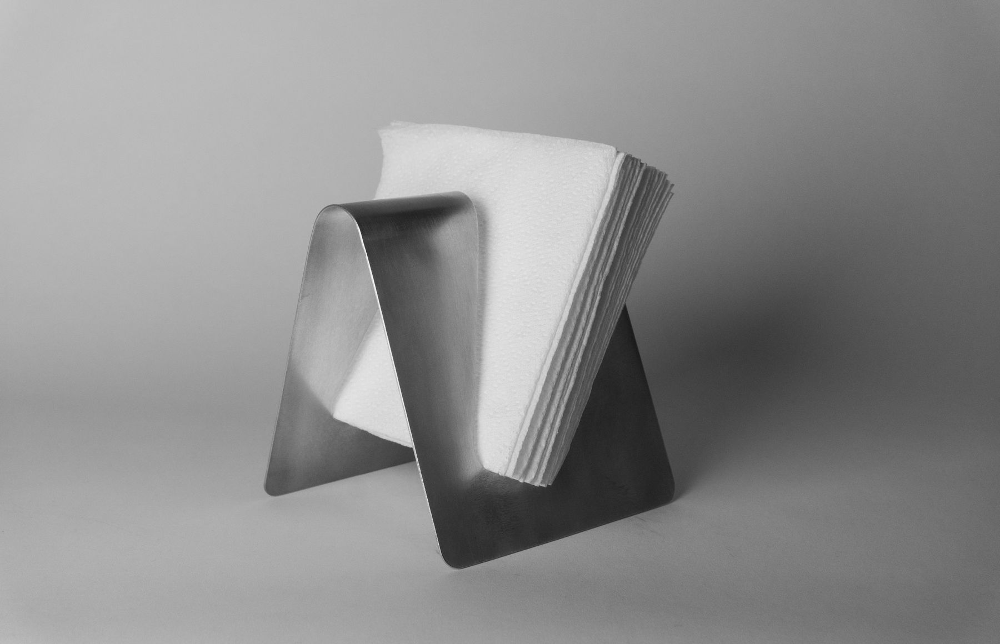
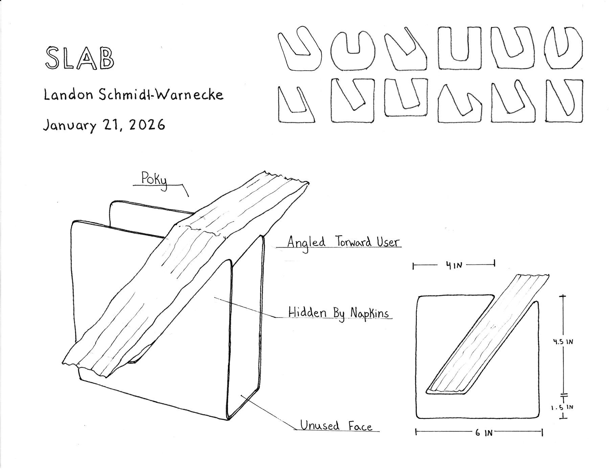
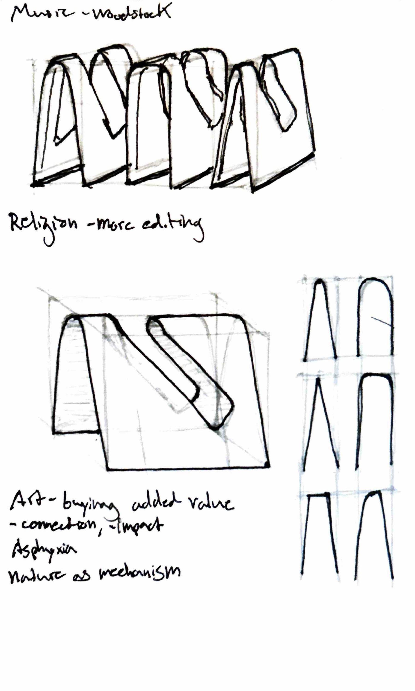
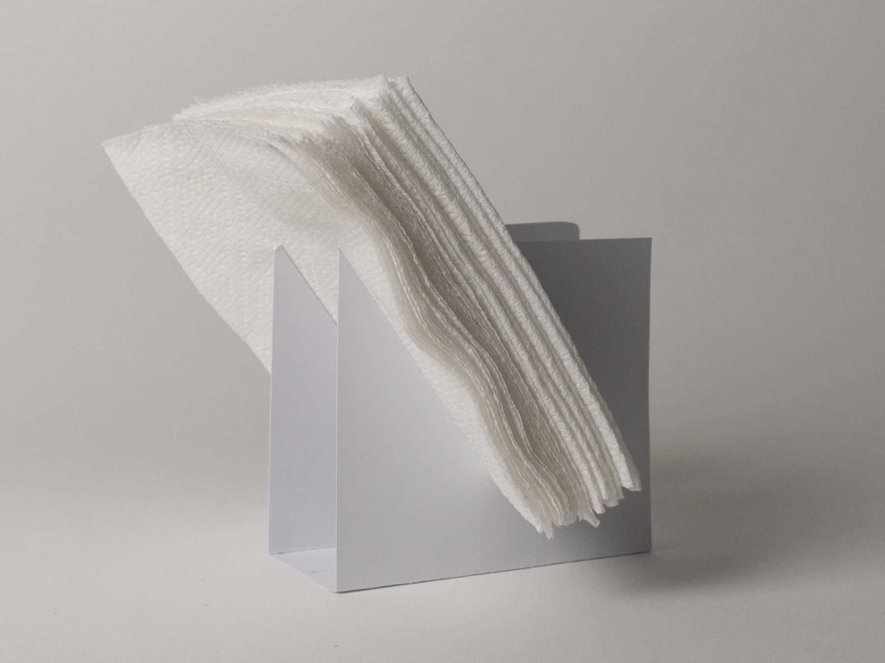
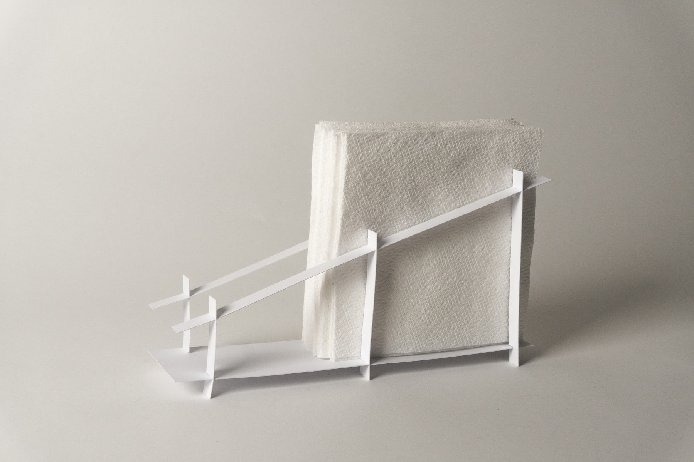
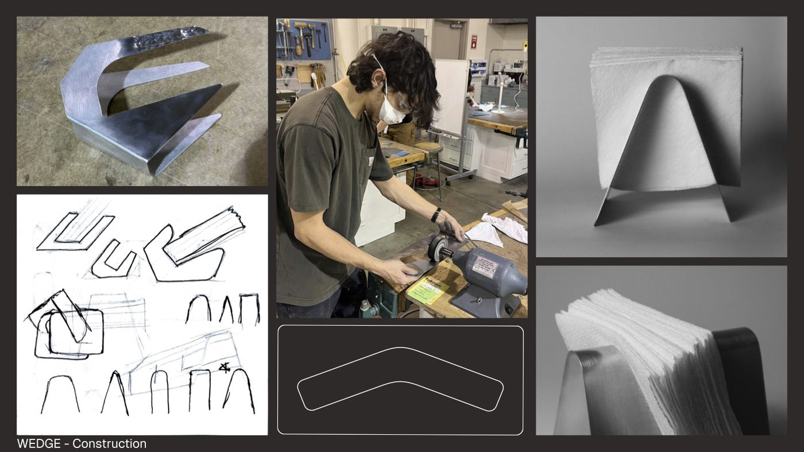
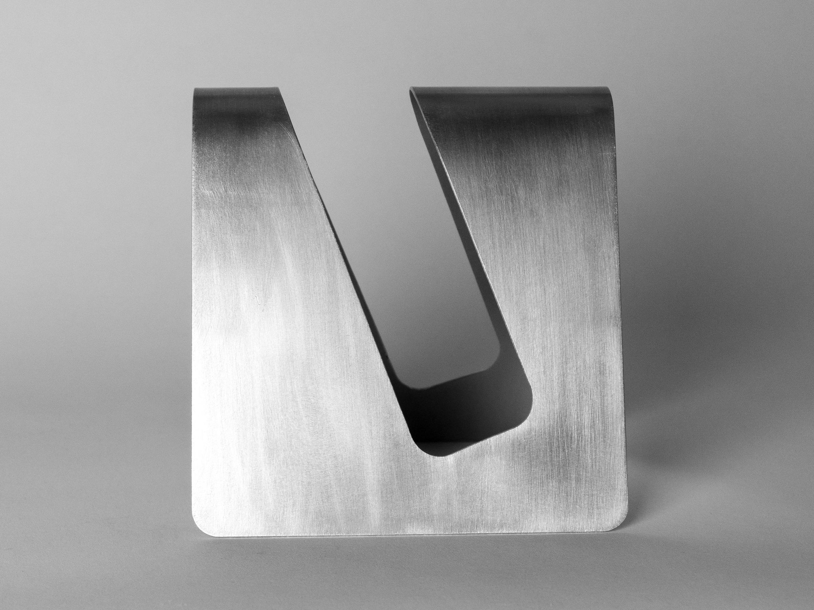
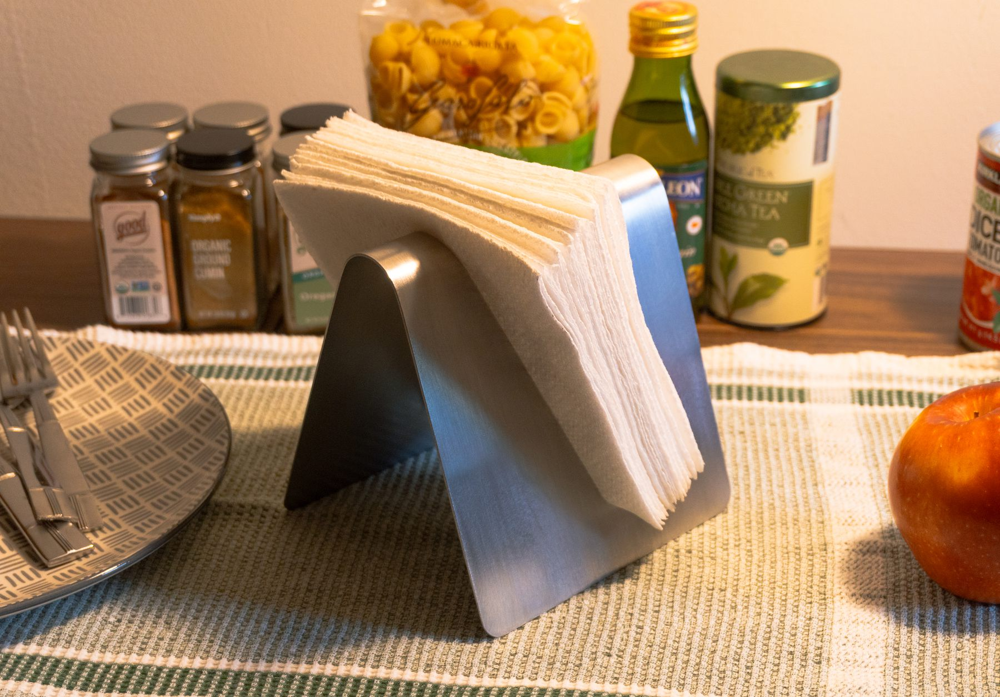
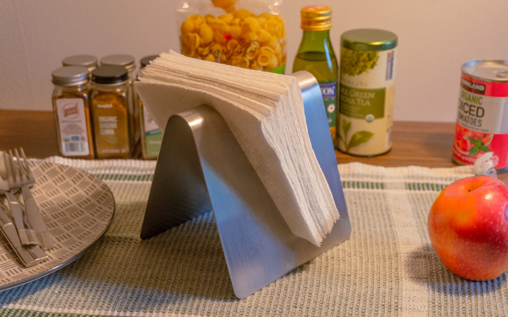
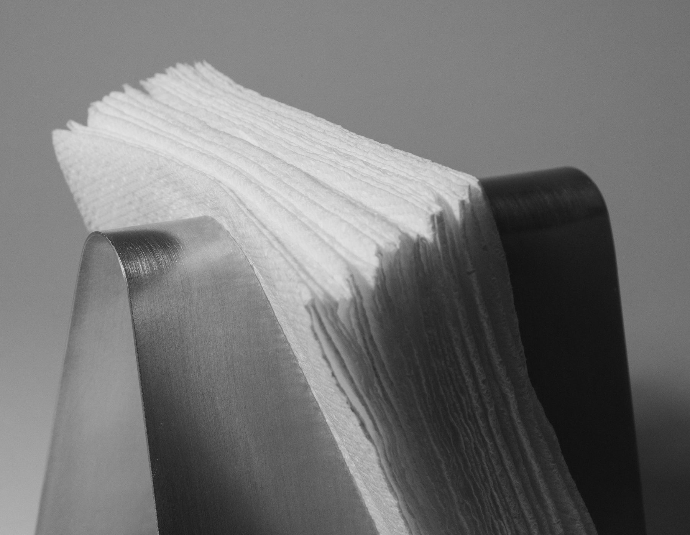

01
Overview
A napkin holder made from one folded sheet of metal. [TO WRITE: the brief or constraint, and who it is for.]

02
Ideation
Sketches and quick paper models explored folded, wedge-shaped forms that hold a stack of napkins upright.




03
Construction
The form was cut and bent from sheet metal in the shop. [TO CONFIRM: tools and finishing process.]


04
Final
The finished holder on the kitchen table.


